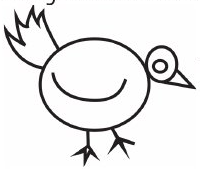
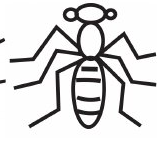
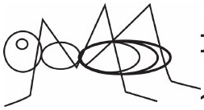
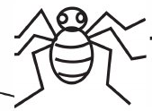

Somo la kwanza
Kuchora kwenye kibao
Katika somo hili utajifunza kuchora kwenye kibao.
Chora ndege hawa kwenye kibao.
Andika jibu kwa mkono, au tumia kibodi au Breli katika sehemu hii.

Chora wadudu hawa kwenye kibao.
Andika jibu kwa mkono, au tumia kibodi au Breli katika sehemu hii.



Chora wanyama hawa kwenye kibao.
Andika jibu kwa mkono, au tumia kibodi au Breli katika sehemu hii.